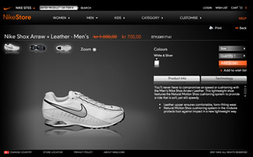

Over the years i have worked on a lot of Flash projects. Sadly these tend to have a short lifespan, before they are consumed by the internet. I have attempted to preserve some of these projects as much as possible, but due to the way they are often part of a large ecosystem with data coming from an external server it can be difficult. As a result of this most of the following are demos created during production, so they can contain dummy content, copy might be missing and external features might be broken.
Swatch
We got a chance to promote the new Swatch Touch watch at MTV EMA 2011 in Belfast.
Swatch Wall (Proof of Concept)
The Snap Dance Wall would display all the snap dances people recoreded with their iPhone, moving to the beat of Trentemøller. This is the original proof of concept demo. The final version that launched on swatch.com was very similar to this, very a few additions that allowed you to view and share each indiviual snap dance.
Oticon
Pandora
I created a lot of season campaigns for Pandora
A Universe of Charms (Demo)
This awesome campaign allowed you to dedicate a star to someone special, with a short message and a charm attached. It was very popular in the Pandora community and got a few thousand dedications.
Valentines Kiss (Demo)
This valentines campaign lets you place a kiss on an image of someone special. You can select a Facebook friend, and it will attempt to find a picture with just the two of you. You can then position a kiss on it, and send it that special person.
Necklace (Demo)
This campaign allows you to create your own necklace, by attaching different chains. There was a lot of calculations going on to create and animate these chains.
Perfect Match (Demo)
I created this product selection wheel that loads Pandoras products and allows you to scroll through them. It has some sweet mouse over and selection effects.
Nike
Nike Women - Here I Am
The Here I Am campaign was a community site for girls, allowing them to share their passion.
Nike EMEA Store
Some of the first work i did when i started at Framfab was maintaining the Nike Store Flash site. A massive webstore created in AS2.
Danske Spil
Over the years i have created a lot banners for Danske Spil. Most a just your everyday flash banner, but one was a bit more...
Mariehøns Lotto
This banner won a Creative Circle. Pretty awesome for a small banner project! The bugs have some basic AI that makes them move in one direction for a certain distance, or untill they hit something. Afterwards they will turn around and move in a new direction. It has all been animated using Greensocks TweenLite, giving the banner some very tactile feedback. It feels good to poke those bugs!
Bear League
The Bear League project was an attempt to create a large online universe to compete with the likes of Penquin Club. You had your own bear avatar that could run around in the world and meet other players. You could play varius minigames to earn coins and fame on the leaderboards. Today the project has sadly been shut down, and all that remains is a few screenshots and videos.
Electrolux
Art Home Teaser
For Electrolux i created a countdown page their Art Home project. It mixes in some sweet thread animation with 3d boxes, video and sound to create a sweet teaser page. Because it's an old countdown it will just write "Zero days" etc. if you view it now.